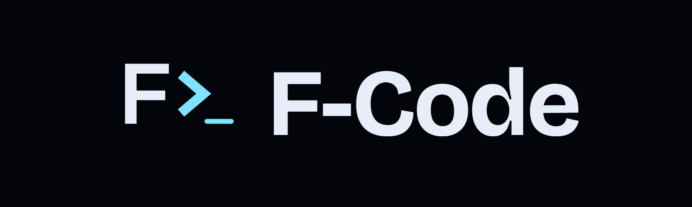
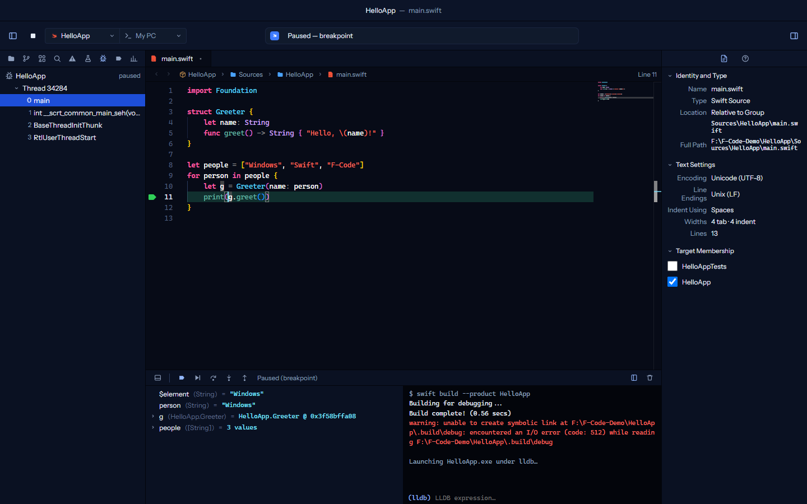

Xcode-style Swift IDE for Windows
Write
Swift
on Windows.
See it run on a real iPhone Simulator.

Official Swift toolchain
LLDB debugging
Real iOS Simulator over SSH
github.com/Twirledd/f-code
·
MIT
·
@TomLyonsLF